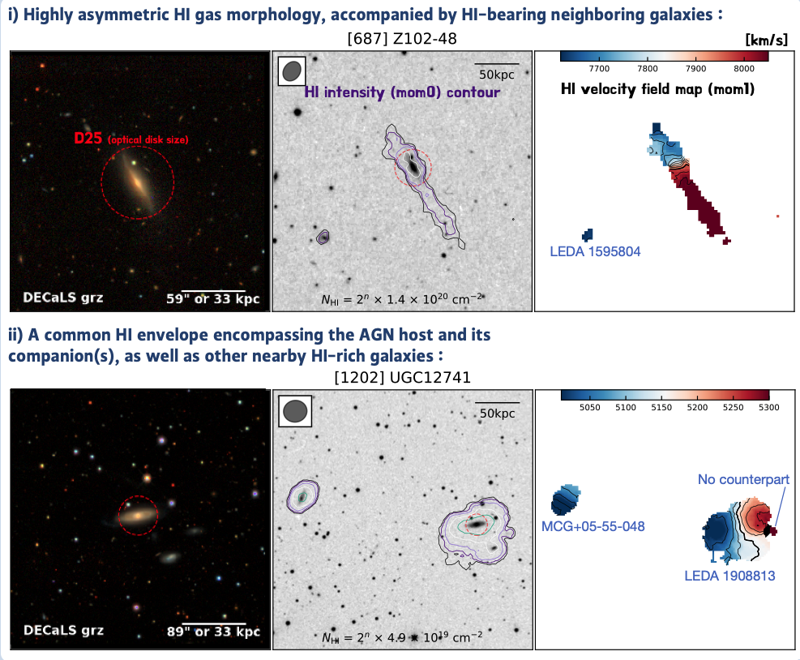
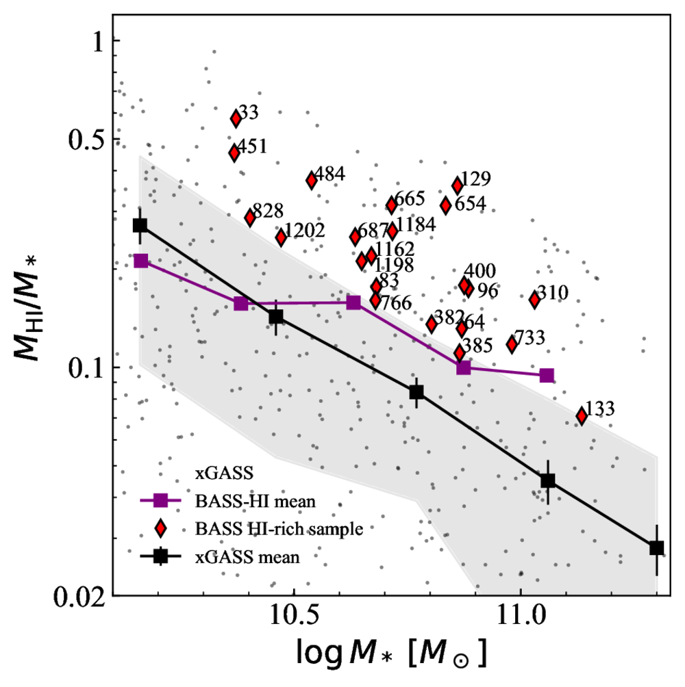
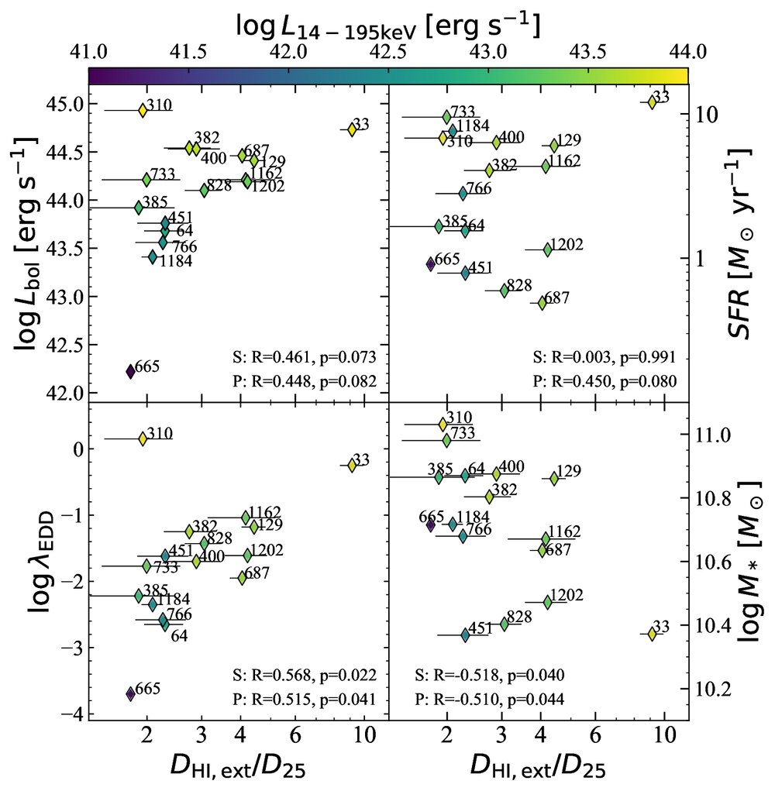

BASS-HI
The resolved HI study on hard X-ray AGN host galaxies, based on the BASS survey.

HI morphology of the HI-rich hosts
Optical (DECaLS grz), HI intensity (moment 0) and HI velocity field (moment 1) maps for two representative hosts: an asymmetric HI disc with HI-bearing neighbours, and a common HI envelope shared by the AGN host and its companions.

Gas fraction against stellar mass
The HI-to-stellar mass ratio of the BASS HI-rich sample compared with the xGASS reference sample and its running mean.

HI extent against AGN and host properties
The extent of the HI relative to the optical disc (DHI,ext/D25) against bolometric luminosity, star formation rate, Eddington ratio and stellar mass, coloured by hard X-ray luminosity.